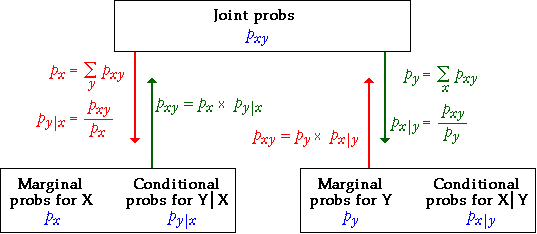

Marginal and conditional probs can be found from joint probs (and vice versa)
We have used three types of probability to describe a model for two categorical variables — the joint probabilities, the marginal probabilities for the two variables and the conditional probabilities for each variable given the value of the other variable. These sets of probabilities are closely related. Indeed, the model can be equivalently described by any of the following.
The diagram below shows how to find each set of probabilities from the others, using the formulae described in the earlier pages of this section.

Bayes theorem
In particular, note that it is possible to obtain the conditional probabilities for X given Y, px | y, from the marginal probabilities of X, px, and the conditional probabilities for Y given X, py | x. This can be expressed in a single formula that is called Bayes Theorem, but it is easier in practice to do the calculations in two steps, obtaining the joint probabilities, pxy, in the first step. There are several important applications of Bayes Theorem.
Accuracy of medical diagnostic tests
Medical diagnostic tests for a disease are rarely 100% accurate. There are two types of error:
There are commonly non-zero probabilities for each of these types of error. Consider a diagnostic test with probability 0.05 of a negative test result for someone who has the target disease, and probability 0.10 of a positive test result for someone who does not have the disease. These are conditional probabilities and can be written formally as:
pnegative | disease = 0.05 ppositive | no disease = 0.10
Since the probability (proportion) of people with the disease having a positive test result is one minus the conditional probability of a negative test result (and a similar result for those who do not have the disease), the remaining conditional probabilities are
ppositive | disease = 0.95 pnegative | no disease = 0.90
We will also assume that 10% of people who are given the test have the disease. This corresponds to a marginal probability, P(disease) = 0.10.
The diagram below shows how these marginal probabilities for Y (disease status) and conditional probabilities for X (test results) given Y can be used to obtain the conditional probabilities for Y (disease status) given X (test results).
The initial information is shown in blue at the top of the diagram. The joint probabilities (green) are first found from them. Click on any value in the table of joint probabilities to see how it is related to the initial information.
Marginal probabilities for the test results are next obtained by adding the columns of joint probabilities. Click on any of the black marginal probabilities to see how they are obtained from the joint probabilities.
Finally the conditional probabilities for disease status (given test results) are obtained from the joint probabilities and the marginal probabilities for the test results. Click on the conditional probabilities on the bottom right of the diagram to see the formula.
Initially there might seem to be a contradiction between the two conditional probabilities,
ppositive | disease = 0.95
pdisease | positive = 0.514
However the two probabilities are consistent since they have very different interpretations. The proportional Venn diagrams below help to explain the difference. The diagram on the left shows the marginal and conditional probabilities given in the question. The corresponding diagram on the right shows the marginal probabilities for the test results and the conditional probabilities for disease status.
Remember that the areas of the rectangles equal the joint probabilities and are therefore the same in both diagrams.
Drag the slider to alter the proportion of people who have the disease in the population. (We assume that the probabilities of false negatives and false positives from the test remain the same.) Observe that: